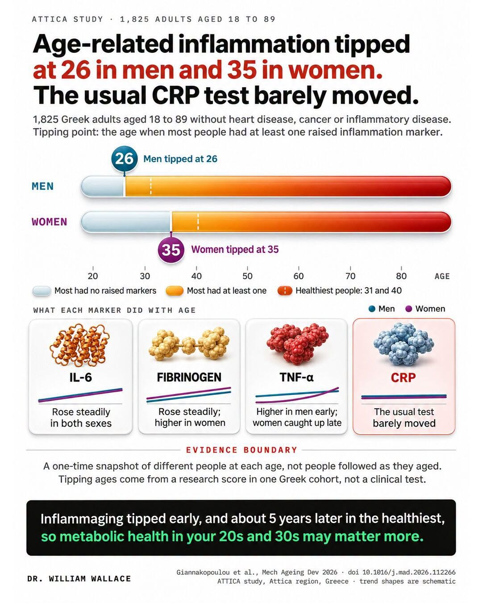

Inflammation is the body's alarm system, and in atherosclerosis it is switched on inside the artery wall. Cholesterol particles that lodge in the wall are treated by the immune system as something to attack, and the resulting battle shapes how plaque forms, grows and eventually ruptures12. This is why some people who have excellent LDL cholesterol on a statin still have heart attacks. The leftover danger is often called "residual risk", and inflammation is thought to be a large part of it34.
The everyday blood test for this is high-sensitivity C-reactive protein (hs-CRP). It is cheap and widely available, and a 2025 American College of Cardiology (ACC) Scientific Statement recommended measuring it alongside cholesterol in both primary and secondary prevention56. But hs-CRP is a blunt instrument: it tells you there is a fire somewhere in the body, not where. This article explains what the test means, what the trials show, where the evidence is mixed, and what the group's admins suggest discussing with a doctor.
What inflammation does in the artery wall
Atherosclerosis is now understood by the group's sources as a chronic inflammatory disease of the artery wall, with immune cells and inflammatory signaling involved from the first deposit of plaque to its rupture25. Peter Libby describes it as a disease of constant cellular conflict inside plaques, with superficial erosion increasingly recognized as a cause of clots, and with bone marrow signaling and clonal hematopoiesis (blood stem cells carrying age-related mutations) driving white cells into plaques11.
A chain of signals links the plaque to the blood test. According to a summary by Gokhan Can, cholesterol crystals in a plaque activate the NLRP3 inflammasome, which releases the master cytokine IL-1 beta. IL-1 beta stimulates IL-6, and IL-6 makes the liver produce CRP2. A Scientific American article shared by Louis Nervegna puts it simply: cholesterol is the match that lights the fire of vascular inflammation1. Louis also adds that LDL which enters the wall and oxidizes attracts immune cells, which is one reason LDL-lowering drugs also lower hs-CRP12.
Gokhan Can has summarized preclinical work suggesting that high LDL also acts earlier, at the level of the bone marrow. In mouse studies, high cholesterol pulled blood stem cells out of dormancy, skewed them toward inflammatory monocytes and left lasting epigenetic changes, which the review offers as a molecular basis for residual inflammatory risk after cholesterol is treated. This is preclinical evidence, not yet a clinical recommendation13.
Other sources of low-grade inflammation also feed into this picture. The group's overview of non-traditional risk factors lists gum disease (periodontitis, with a 1.1 to 2.2 fold higher coronary risk in meta-analyses), chronic immune activation, clonal hematopoiesis, gut metabolites and pollutants, all converging on inflammation and oxidative stress2. Rheumatoid arthritis and similar conditions are described as carrying a 50 to 70 percent higher risk of cardiovascular events2. Gokhan's own review with Dr. Hasselbalch examines the links between cardiovascular disease, chronic inflammation and blood stem cell mutations in polycythemia vera14.

Measuring it: hs-CRP and its limits
What the numbers mean
hs-CRP and regular CRP are the same protein; hs-CRP is simply a more sensitive assay that can detect the small, "silent" background levels relevant to heart disease915. The ACC statement reiterates the usual bands: under 1 mg/L lower relative risk, 1 to 3 mg/L average, and over 3 mg/L higher5. The statement also notes that up to half of US adults have a level of 2 mg/L or higher5.
How well it predicts risk
The strongest numbers in the group come from long-term cohorts:
- In the Women's Health Study (NEJM 2024), 3,662 first major cardiovascular events occurred over 30 years. Comparing the top with the bottom fifth, the hazard ratio was 1.70 for hs-CRP, 1.36 for LDL cholesterol and 1.33 for lipoprotein(a). Each marker contributed independently, and a combined model gave the widest spread of risk7.
- The ACC statement also cites a meta-analysis of more than 160,000 people in which each standard-deviation rise in hs-CRP went with a 37 percent higher risk of coronary heart disease and a 55 percent higher risk of cardiovascular death5.
- In patients with known disease, the statement says hs-CRP is at least as predictive of future events as LDL, even on a statin6.
- In more than 9,400 statin-treated PCI patients with LDL under 70 mg/dL, hs-CRP of 2 mg/L or more went with about 1.8 times higher major adverse cardiac events, and about 1.9 times when combined with raised triglycerides. Elevated triglycerides alone showed no significant increase. The excess was mostly driven by all-cause mortality3.
Show data
| Hazard ratio (log scale) | 95% CI | |
|---|---|---|
| *hs-CRP | 1.70 | – |
| LDL cholesterol | 1.36 | – |
| Lp(a) | 1.33 | – |
Show data
| Relative risk of events (log scale) | 95% CI | |
|---|---|---|
| *High hs-CRP | 1.8 | – |
| High hs-CRP plus high triglycerides | 1.9 | – |
Why a single reading can mislead
Louis Nervegna stresses several caveats:
- It is systemic. hs-CRP is made by the liver in response to IL-6 and rises with inflammation anywhere, so a high value could reflect a hidden infection, a hard workout the day before or an arthritis flare as easily as a cardiovascular problem915.
- Temporary spikes. Colds, vaccinations, injuries, surgery, allergic reactions and intense exercise all push it up temporarily, and testing should be avoided during those periods9.
- It is noisy. It varies greatly from day to day, so it predicts risk best when several measurements taken over a longer period are averaged916.
- Other drivers. Louis argues that visceral fat and, in older people, ageing skin are major contributors to hs-CRP, and he has also claimed that most circulating CRP originates in skin; he describes the latter as his own claim, not a finding of the Mayo Clinic study he shared1517. A study he shared found higher CRP more likely with overweight or obesity, current smoking, female sex, no statin use, and higher LDL-C and triglycerides18.
- Age. In the ATTICA analysis of 1,825 Greek adults, a combined IL-6, TNF-alpha and fibrinogen score crossed into the "activated" range by about age 26 in men and 35 in women, whereas CRP itself barely changed with age19.

Other markers
No accepted commercial blood test measures inflammation only in the arteries915. Two candidates are Lp-PLA2 and myeloperoxidase (MPO), which are more artery-specific but, as Louis notes (citing Tom Dayspring), are weak predictors of risk by themselves1516. Louis suggests GlycA, an NMR-measured composite of inflammatory proteins, may prove more useful because it predicts risk well without needing averaging; this is his view, and Dayspring is quoted as calling it far more useful than Lp-PLA2 or MPO16. The ACC statement lists IL-6 and fibrinogen as other predictive markers, but hs-CRP as the most practical5.
Imaging is a different route. The ACC statement calls the CT perivascular fat attenuation index promising but not routine5. Louis shared the CaRi-Heart AI analysis of standard CT angiograms, which reports a coronary-specific Fat Attenuation Index. In one personal case, stenosis had fallen from 70 percent to under 25 percent with LDL at 35 to 50 mg/dL, yet the highest-vessel score was 8.1 (93rd percentile) with an hs-CRP of only 0.15 mg/L, an example of how the blood test and the scan can disagree. Louis believes it may be the best non-invasive measure of residual inflammatory risk, which is his opinion20.

One related point: Lp(a) behaves as an acute-phase reactant, so large swings in it usually reflect acute inflammation (infection, surgery, vaccine reactions) rather than an intervention working, and guidelines advise not testing during such periods21.
What the trials show
Proof that inflammation matters
Louis argues that the first major trial showing that lowering arterial inflammation reduces heart attacks and strokes proved that inflammation is causal in cardiovascular disease22. The group's sources point to the CANTOS trial of canakinumab, which blocks IL-1 beta; Gokhan's summary reports a 15 percent reduction in major cardiovascular events without lowering cholesterol223. Libby also cites canakinumab and colchicine as therapies that showed benefit11.
JUPITER enrolled nearly 18,000 people with low LDL but high CRP. According to the Scientific American article, it stopped early with a 54 percent lower risk of heart attack and 48 percent lower risk of stroke on a statin, and those who lowered both cholesterol and CRP were best protected1. Rosuvastatin lowered hs-CRP by 37 percent in that trial24.
Colchicine
Colchicine is an inexpensive anti-inflammatory drug, described in the group as the first heart drug approved for targeting inflammation25. Medscape reported that the FDA approved low-dose colchicine to reduce cardiovascular events in people with established atherosclerotic disease or with multiple risk factors, and Louis stresses that this includes primary prevention for those with multiple risk factors10. The Scientific American article dates that approval to 20231. A Circulation editorial flagged by Gokhan said colchicine shows promise in reducing atherothrombotic risk by stabilizing plaque and reducing inflammation26.
In a randomized CT angiography trial led by Matthew Budoff, 0.5 mg of colchicine daily for one year reduced percent atheroma volume by more than 1 percent versus placebo, with a significant fall in CRP, trends toward regression of non-calcified plaque, and slower progression of calcified plaque. Budoff called it a relatively small study that supports colchicine in chronic stable coronary disease27. Louis also lists colchicine among six strategies with randomized evidence for plaque regression28. He has speculated that colchicine may work partly by inhibiting IL-11, a pro-fibrotic cytokine from the IL-6 family; he labels this a hypothesis2529.
Nuances and controversies
Is inflammation a cause or a bystander?
The group's debate posts show real disagreement. In a Libby versus Raal debate, Libby argued there is substantial residual inflammatory risk even with well-controlled LDL and that IL-6 is causal; Raal argued LDL is the primary cause, with inflammation a consequence that can mostly be handled by lifestyle and weight loss. Both agreed that addressing lipids and inflammation has value30. Louis, for his part, frames inflammation as an independent risk factor that persists even when classical risk factors are well managed14.
The ZEUS result
IL-6 looked like a logical target, but ZEUS tested it directly. In 6,376 people with clogged arteries, chronic kidney disease and high CRP, monthly ziltivekimab lowered CRP by 64 percent and IL-6 by 76 percent, yet heart attack, stroke or cardiovascular death occurred in 17.6% versus 17.7% on placebo over 33 months, with more serious infections in the treated group831. A companion post stresses that this is why outcomes matter more than improved bloodwork23.
How to interpret this is debated within the posts:
- The summary of the two trials notes that all participants already had disease, so ZEUS does not prove inflammation is not causal8.
- One commenter suggested that with LDL already low there may have been less room left to show benefit31.
- Louis argues IL-6 may be a marker of a broader inflammatory pattern, more like HDL than a direct cause, and that diet and colchicine work because they address the whole pattern31.
- He adds that interventions addressing upstream causes, such as statins and diet, seem to work better than blocking inflammation downstream, and that NSAIDs and corticosteroids lower hs-CRP yet make heart disease worse. He stresses this does not mean inflammation is not causal24.
The same lesson appears in the posts on earlier failures, such as the HDL-raising drug torcetrapib, where events worsened despite a better lab number8.
Are seed oils inflammatory?
Many people assume omega-6 seed oils drive inflammation. Louis points to a meta-analysis of 30 randomized trials (1,377 people) in which higher linoleic acid intake had no significant effect on TNF, IL-6, adiponectin or MCP-1, and CRP (16 studies) was not significantly changed (standardized mean difference 0.09, 95% CI -0.05 to 0.24)323334. In the Framingham Offspring and Omni cohorts (2,777 people), higher red blood cell linoleic acid correlated weakly but inversely with CRP (r = -0.06) and soluble IL-6 (r = -0.15)35. A cross-sectional analysis of 1,894 people found similar associations, though it cannot show causation3637. Louis concludes that avoiding seed oils is not a way to lower CRP38. A very small 2026 trial of 10 adults on 30 g soybean oil daily also saw arachidonic acid fall39.
How to lower it: what the group discusses
Lifestyle
The ACC statement stresses lifestyle: at least 150 minutes of exercise per week, a Mediterranean or DASH diet, and two to three fatty-fish meals per week for EPA and DHA6. Louis cites a meta-analysis of 30 trials (3,106 people) in which olive oil lowered CRP by 0.64 mg/L and IL-6 by 0.29, and improved flow-mediated dilation40. An analysis of blood samples from the COSMOS cocoa trial reported that cocoa extract lowered hsCRP by 8.4 percent per year versus placebo in 598 participants; Louis notes the main COSMOS trial reported 27 percent lower cardiovascular mortality, and Gokhan says he eats cocoa but does not supplement4142.
On the downside, a clip Louis shared reported that one 20-ounce sugar-sweetened drink daily for three weeks doubled hs-CRP in healthy young men, with a rise in small dense LDL43. Weight loss is also listed among strategies with randomized evidence for plaque regression28. A podcast claim that running helps depression, especially in people with high inflammation, is secondhand and without named studies44.
Drugs that lower hs-CRP
- Statins. A 2022 meta-analysis of 26 randomized trials found statins lowered hs-CRP by about 0.97 mg/L (95% CI -1.26 to -0.68) in people with cardiovascular disease, in both high- and lower-intensity regimens; Louis notes this is roughly a 50 percent fall from a starting value of 2 mg/L4546. He also suggests statins may lower hs-CRP partly by stabilizing inflamed plaque24.
- Other lipid-lowering drugs. Louis summarizes average hs-CRP reductions from meta-analysis data as about 17.3 percent for statins, 20 percent for bempedoic acid, 10.3 percent for fibrates, 6 percent for PCSK9 inhibitors and 3.2 percent for ezetimibe, versus about 12.8 percent for fish oil; the paper's own illustration, shared in the same post, shows PCSK9 inhibitors slightly raising hs-CRP rather than lowering it, and the fibrate reduction as not statistically significant12. The Cardiovascular Research meta-analysis found statins, bempedoic acid, ezetimibe and omega-3s reduced CRP independently of LDL-C47. A bempedoic acid outcomes study in 4,206 statin-intolerant patients reported a 30 percent lower primary composite, with hs-CRP down 21.5 percent48.
- Plaque-level markers. A review quoted by Louis found four statins lowered Lp-PLA2, and adding ezetimibe lowered it more49.
- Others in the group. Pioglitazone lowered hsCRP and raised adiponectin in small plaque trials in people with diabetes50. Small trials found taurine (3 g/day for 8 weeks in type 2 diabetes) and ginger (1,600 mg/day for 8 weeks in 57 men) lowered hs-CRP5152. Gokhan shares a personal list of anti-inflammatory drugs and supplements without cited trials53, and his own hs-CRP fell from about 1.2 to 0.254. These are limited or personal evidence, not outcome trials.
Still preclinical
A University of Pennsylvania study engineered regulatory T cells to target oxidized LDL and cut plaque by 70 percent in mice. It is a long way from patients55.
What this means for you
- The group's admins suggest asking a doctor about an hs-CRP test alongside cholesterol, since the ACC statement recommends universal screening and its authors say "the time for taking action has now arrived"5656.
- Test when well, avoiding the days after infections, vaccines, hard workouts or surgery, and consider repeating it and averaging916.
- A high value deserves a look at obvious sources such as infection, gum disease, arthritis and visceral fat, since hs-CRP does not point to the arteries215.
- Do not neglect LDL. Inflammation and LDL work together, and the group's sources favor fixing upstream causes through lipids, diet and exercise1224.
- Colchicine is an FDA-approved option for people with established disease or multiple risk factors, to be discussed with a cardiologist1027.
- Prefer treatments proven on outcomes over lab numbers, as ZEUS shows823.
Frequently asked questions
Is hs-CRP the same as CRP?
Same protein, different sensitivity. hs-CRP detects the small background levels relevant to heart disease, while regular CRP is adequate for large spikes such as autoimmune disease9.
What is a "good" hs-CRP level?
The ACC statement's bands are under 1 mg/L lower risk, 1 to 3 average, over 3 higher5. Gokhan reports his own reading fell from about 1.2 to 0.254.
If my LDL is low, can inflammation still matter?
Yes, according to the sources. In statin-treated PCI patients with LDL under 70, elevated hs-CRP carried about 1.8 times more events3, and Ridker is quoted saying that low LDL on a statin does not mean you are home free4.
Why did ZEUS fail if inflammation is causal?
It is debated: patients already had disease, LDL may have been low, and IL-6 may be a marker for a broader pattern rather than the lever itself831.
Do seed oils raise CRP?
Trial meta-analyses found no significant effect of linoleic acid on CRP or IL-63234.